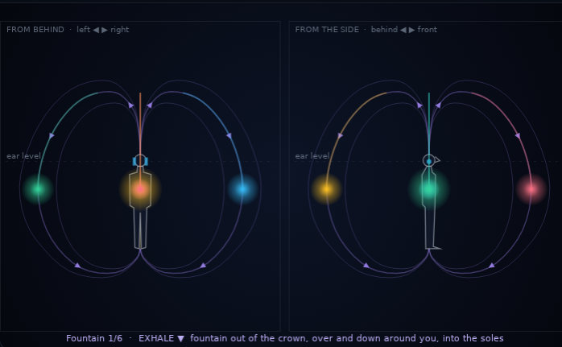

How to listen, how the REBAL flow is rendered, what every control does
The Gateway Experience manual (The Monroe Institute, 1989, Discovery #3 "Advanced Focus 10") describes the REBAL as a moving energy field created with the breath: let energy flow out of the top of your head like a fountain, allowing it to continue flowing gently down and around you, and then re-entering your body through the bottoms of your feet. Then shift the flow pattern into a spiral, winding the energy down around you and coiling it back up inside you.

| Breath | Path of the energy | Sound cues |
|---|---|---|
| Inhale | From the soles up the front of the body (about 35 cm in front of it, swaying gently left and right) to the face, then into the head. | Starts straight below you and climbs in front of you to face height, then moves inside the head. (A rise along the spine cannot be heard: every point of the body axis is straight below the ears.) |
| Exhale | Out of the crown, up (≈ 1.3 m above the ears, leaning slightly forward), arcing over, flowing down around the outside of the body (widest beside the waist), under the feet and into the soles. | The streams leave the head, rise overhead, spread left/right (or all around with more streams) and descend around you until they disappear under you. With water waves, the wave breaks out of the crown and washes down around you. |
| Spiral | Same balloon; the outer flow winds around you (1.25 turns by default), the inner flow coils up inside. | The streams circle around you while descending; inside the head the swirl is heard as a gentle left-right movement. |
| Balloon | The streams keep circulating with staggered phases. | A continuous field all around you that swells with your breath. |
| REBAL pattern | Guided (fountain → spiral → balloon), or one of the three patterns. |
| Streams | 1-6. Two streams (default) go left and right and are the easiest to follow; four go right, behind, left, in front; one stream rotates by 90° each breath. |
| Balloon size | Widest radius of the torus (0.8-3.5 m); the fountain height scales with it. |
| Spiral turns | Turns around the body per exhale in the spiral pattern. |
| Sound | Breath (default), water waves, choir, harp, water drops, warm bowls, soft chimes. A sound keeps the same pitch and timbre wherever it is, so what you hear move is its position: the ears' own cues do the localisation. Breath is a "haa" on the exhale and a thinner "hhh" on the inhale; water waves swell on the inhale, break out of the crown and wash down on the exhale. Choir, harp, bowls and chimes hold notes of one chord. |
| 3D intensity | 0 = natural cues only. Higher values add the tricks of "8D audio": a larger level difference between the ears (up to 18 dB), sounds behind and below muffled, sounds above brighter. Default 60 %. The calibration always uses natural cues. |
Over headphones the brain localises a sound from small differences between the two ears and from the way the head, ears and shoulders colour the spectrum. AETHER computes these cues for every stream, 48 000 times per second, from its position relative to your head:
| Direction | Main cues | How AETHER renders them |
|---|---|---|
| Left / right | Interaural time difference (up to ≈ 0.65 ms) and level difference (large only at high frequencies) | Spherical-head delays per ear and Brown & Duda head-shadow filters; near-field level differences for sources close to one ear. |
| Up / down | Spectral notches made by the outer ear (≈ 6 kHz below → ≈ 10 kHz above), shoulder reflection, torso shadow | Elevation-dependent pinna notches, an 8 kHz "overhead" band, shoulder echo, torso shadow below, and pitch/brightness that follow height. |
| Front / back | Spectral balance (front: more 3-5 kHz; back: more ≈ 1 kHz, darker above) | Blauert directional bands and a rear pinna shadow, adjustable with spectral cue strength. |
| Distance & outside the head | Level, room reflections, direct-to-reverberant ratio | Six early reflections per source, each with its own interaural cues, and a natural room reverb. |
| Inside the body | (not a physical direction) | An interior path: same sound in both ears, dry and close, with a small left/right offset. |
Front/back and up/down depend on ear shape, so they vary between people; left/right is reliable for everyone. Run the ear-model calibration once to pick the model that suits your ears. The Renderer menu also offers the browser's built-in HRTF for comparison.
The outer ear filters sound differently for each direction, and these filters differ from person to person. With someone else's ears, sounds in front are often heard behind and elevation is vague. The best practical fix without measuring your own ears is to choose, by ear, the measured ear model closest to yours.
Eight candidates: the built-in structural model, the MIT KEMAR dummy head, and six listeners of the HUTUBS database (TU Berlin). The six were chosen automatically from the 93 measured people of HUTUBS so that they cover the spread of ear shapes (clustering of their median-plane spectra; each represents 4 to 26 of the 93).
Chance level is 4 of 16 overall and 4 of 8 for front/behind or above/below. Even with a well-matched ear model, front/back swaps remain common over headphones without head tracking; scores around 6/8 for front/behind are good. If front and back stay swapped, try Spectral cue strength 1.3-1.6: with a measured ear model it exaggerates the fine spectral detail of the ears while keeping the level difference between the ears as measured.
Each model stores the direction-dependent part of the measured responses (directional transfer functions), smoothed to 1/8 octave, on a 10° grid over the whole sphere. The browser rebuilds short minimum-phase filters at your sound card's sample rate and interpolates between grid points as sources move. The time difference between the ears comes from a spherical-head model with that listener's head radius (fitted to the measurements, 8.0 to 9.1 cm).
Preset 11. Localisation check plays noise bursts at fixed points (front, right, behind, left, above, below, and diagonals), 2.6 s each, with the name shown on the canvas. Listen with eyes closed first, then compare. If front and back are swapped, raise the spectral cue strength (1.3-1.6) or try the other renderer. You can also choose Hold still and drag the source on either view.
Breaths per minute (3-12), inhale share (30-60 %), optional holds. The tonal centre (default 108 Hz, i.e. A in 432 Hz tuning) tunes every module so they stay consonant together. The hall reverb includes six resonators tuned to the tonal centre (a soft shimmer).
Movements: REBAL, horizontal orbit, vertical loop, free wander over the sphere, localisation check, hold still. Room/externalisation sets the reflections and room reverb.
A logistic map (r ≈ 3.74) and a Hénon attractor choose the next note in the chosen scale, the timbre, the rhythm and a position on a sphere around you. A memory of recent notes and transitions mutates the motif as soon as it starts to repeat.
Left ear: partials k·f − b/2; right ear: k·f + b/2 (k = 1..4), so every partial pair beats at exactly b Hz. Overtones of the carrier flutter at γ (default 40 Hz) on the crests of the beat and the whole layer swells with the breath. Evidence that binaural beats entrain brain rhythms is mixed; use it as a texture.
Eight voices exactly one octave apart glide continuously under a raised-cosine envelope in log-frequency: the pitch rises (or falls) forever without arriving. Thirds and fifths bloom at several time scales.
24-60 Hz with 2nd and 3rd harmonics. Patterns: swells with each exhale, slow heartbeat (36-96 BPM), smooth pulse, steady.
Ocean surf paced by the breath (draws back on the inhale, breaks on the exhale), pink-noise cavern with drifting vowel resonances (Ganzfeld), rain, wind.
Whisper circling the head, soft crackles, wood taps from ear to ear, frame drum and rattle, overtone chant; rendered binaurally at the chosen distance (12 cm-1.4 m).
A preset switches on the modules it lists and fades the others out. Guided sessions move through presets with slow cross-fades (8-40 s) and show the current instruction; touching a control stops the session. REBAL session (20 min): settle with surf → resonant tuning → fountain → spiral → sustained balloon → return. Deep relaxation (15 min) and Expansion (28 min) follow the same principle.
Background playback: on Android Chrome the audio keeps running with the screen locked (media notification). Save / Restore keeps your own settings in the browser.